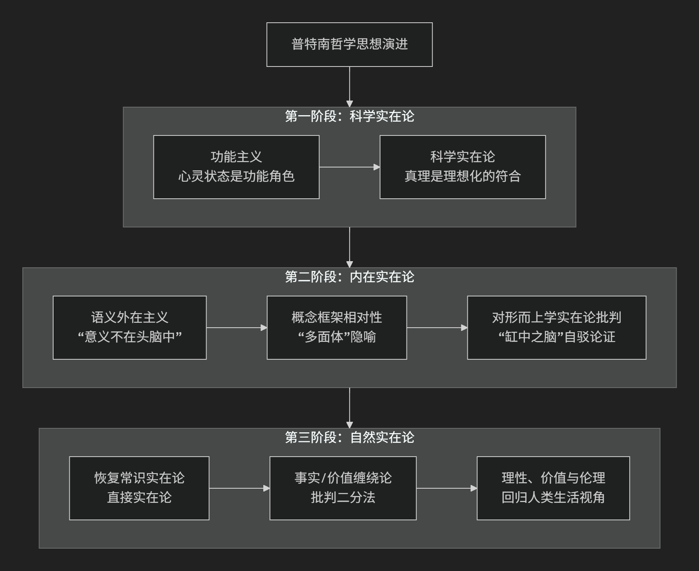

Hilary Putnam
基于希拉里·普特南（Hilary Putnam）哲学核心思想。
希拉里·普特南是20世纪下半叶最具原创性和影响力的哲学家之一。他的思想以其 惊人的广度、深刻的自我批判精神和不断演变的特质 而著称。他的一生在哲学上经历了多次重大的”转向”，但其核心思想可以概括为：对传统哲学中根深蒂固的二分法（如事实/价值、主观/客观、心灵/世界）进行持续而有力的批判，并致力于揭示心灵、语言与世界之间的内在联系。
一、思想演进阶段
普特南的哲学之旅像一条不断自我修正的河流，其思想精髓可以通过他留下的几个里程碑式的“路标”来把握。下图梳理了他思想演进的几个关键阶段与核心贡献：

思想演进三个关键阶段如下：
第一阶段：科学实在论与功能主义
早期，普特南是一位坚定的科学实在论者和功能主义的奠基人之一。
功能主义：
心理状态（如”疼痛”）不是由特定的物理构成定义，而是由其 在认知系统中所扮演的”功能角色” 定义
心理状态可以”多重实现”于不同的物理系统（人脑、外星生物、电脑）
为认知科学和人工智能提供了重要的哲学基础
科学实在论：
科学理论是关于真实世界的描述
成熟科学理论中的术语真实地指称外部世界中的实体
科学进步是不断逼近真理的过程
第二阶段：内在实在论与语义外在主义
这是他最著名、影响最广泛的阶段，他对自已早期的观点进行了深刻的批判。
语义外在主义 （”意义不在头脑中”）：
核心思想：语言的意义依赖于 说话者所处的环境和社会分工
著名思想实验：”孪生地球”
地球人奥斯卡说”水”指H₂O
孪生地球上的”奥斯卡”说”水”指XYZ
尽管心理状态相同， 意义由外部世界决定
影响：挑战传统意义理论，开辟内容外在主义道路
对形而上学实在论的批判：”缸中之脑”论证：
思想实验：如何证明自己不是”缸中之脑”？
结论： “我不是缸中之脑”可能是逻辑上必然为真
论证：如果我是缸中之脑，”脑”、”缸”等词指称模拟影像而非真实对象
意义：表明语言和思想 必然与外部世界联系，彻底的怀疑论自相矛盾
内在实在论：
反对”上帝之眼”式的形而上学实在论
反对相对主义
实在只有在某个概念框架或描述中才能被谈论
“多面体”隐喻：同一对象可从不同视角描述
第三阶段：自然实在论与对二分法的批判
晚年，普特南的思想再次发生重大转变，称为”自然实在论”或”常识实在论”。
恢复直接实在论：
批判”感官材料”等中介物
主张 直接感知世界，消除心灵与世界间的鸿沟
事实与价值的缠绕：
批判”事实判断”与”价值判断”的严格二分
事实描述本身就渗透着价值 （如”残忍”、”优雅”等”厚伦理概念”）
价值判断依赖于对事实的认知
合理的价值判断具有客观性
回归生活世界：
呼吁哲学回归 人类在生活世界中形成的常识和理性实践
放弃脱离经验的形而上学体系
二、核心要义总结
思想阶段 |
核心命题 |
关键概念与贡献 |
|---|---|---|
科学实在论阶段 |
心理状态由 功能角色 定义；科学理论 指称真实实体 |
功能主义、多重实现、科学实在论 |
内在实在论阶段 |
“意义不在头脑中”，反对”上帝之眼”式的形而上学实在论 |
语义外在主义、孪生地球、缸中之脑论证、概念框架 |
自然实在论阶段 |
批判事实/价值二分，主张 直接感知世界，回归常识 |
自然实在论、事实/价值缠绕、厚伦理概念、直接感知 |
三、思想特质与影响
普特南的思想具有深远影响和独特特质：
自我批判的典范：
敢于公开否定自己过去的观点
对真理的真诚追求高于对体系一致性的维护
问题导向：
关注哲学史根本问题
用清晰分析和富有想象力的思想实验推进讨论
跨领域影响：
推动语言哲学、心灵哲学、科学哲学和伦理学发展
为认知科学、人工智能提供理论基础
四、总结
希拉里·普特南的核心思想在于他是一位 不懈的”二分法拆解者”：
批判目标：与将世界割裂开的僵化范畴作战
核心洞见：揭示心灵与身体、语言与世界、事实与价值间的 内在联系
哲学方法：认识到对立范畴在 人类实践的整体中相互缠绕
终极贡献：提供理解人类自身和世界的辩证视角
他的哲学告诉我们，理解的关键不在于选择极端，而在于把握范畴间的辩证统一。